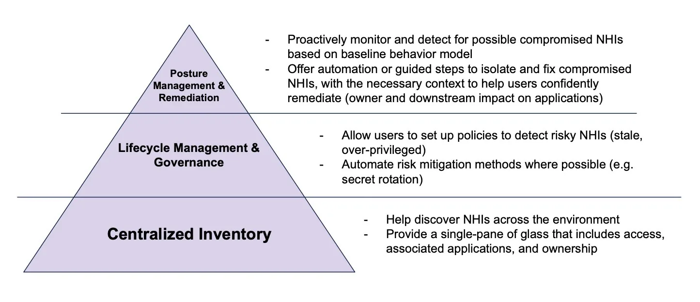
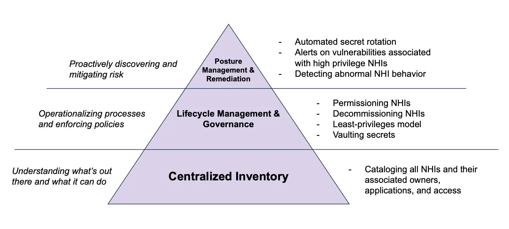
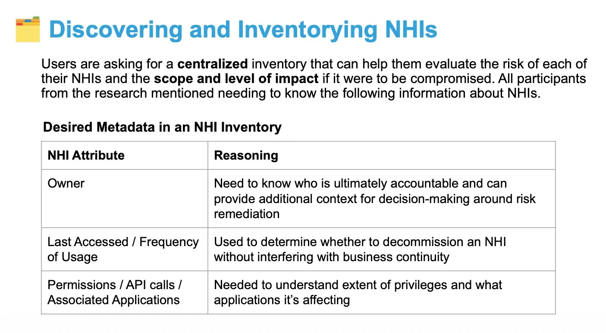
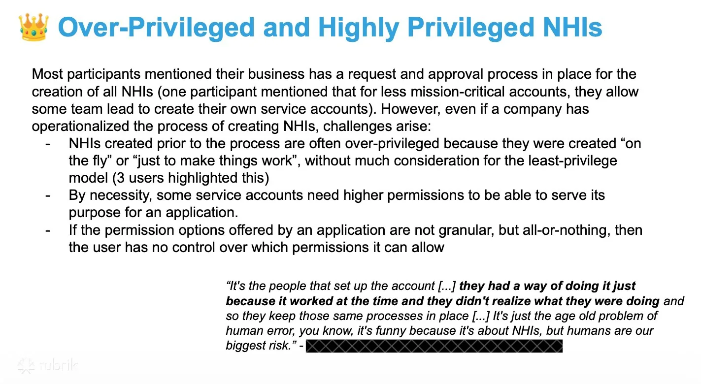
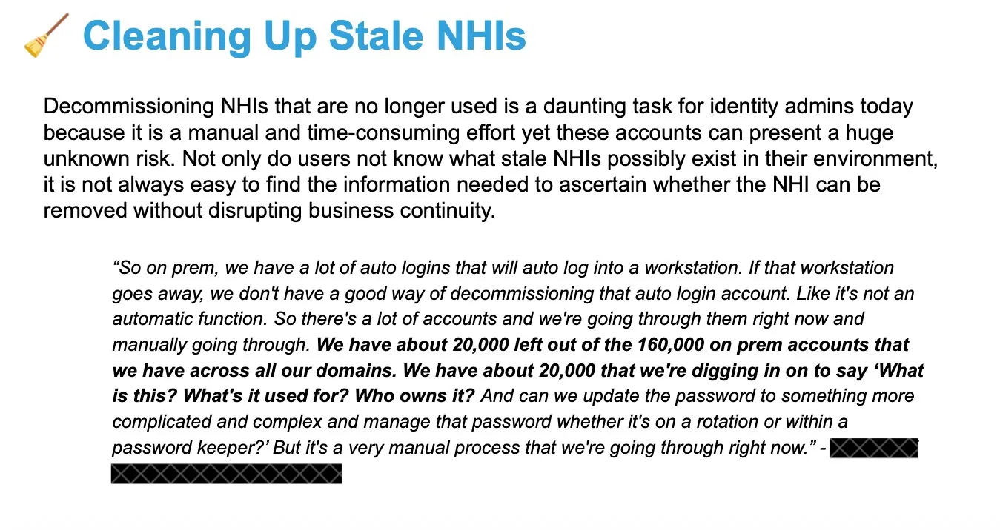
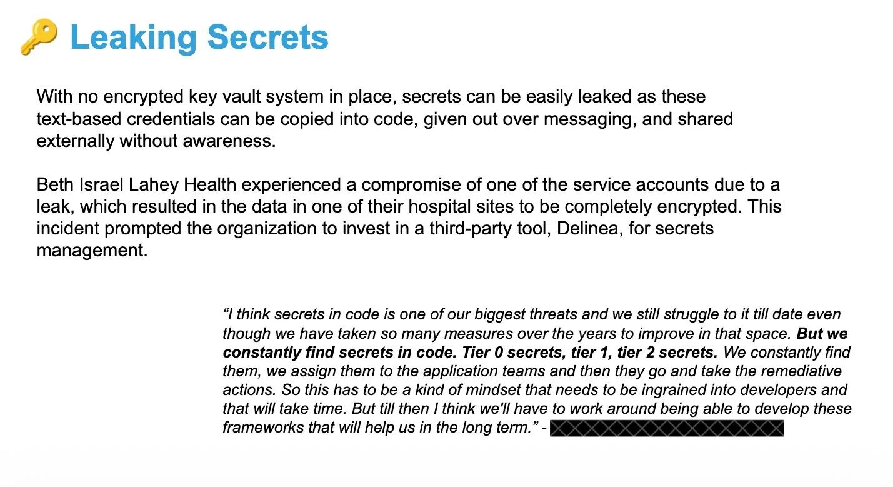
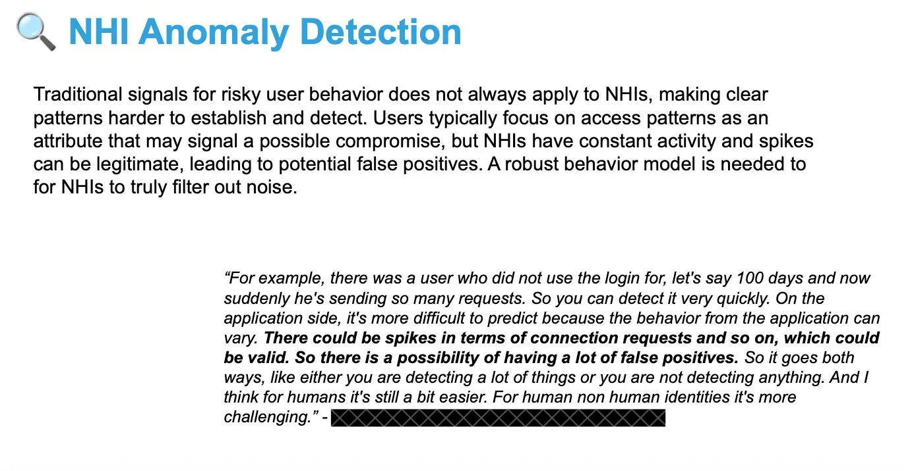
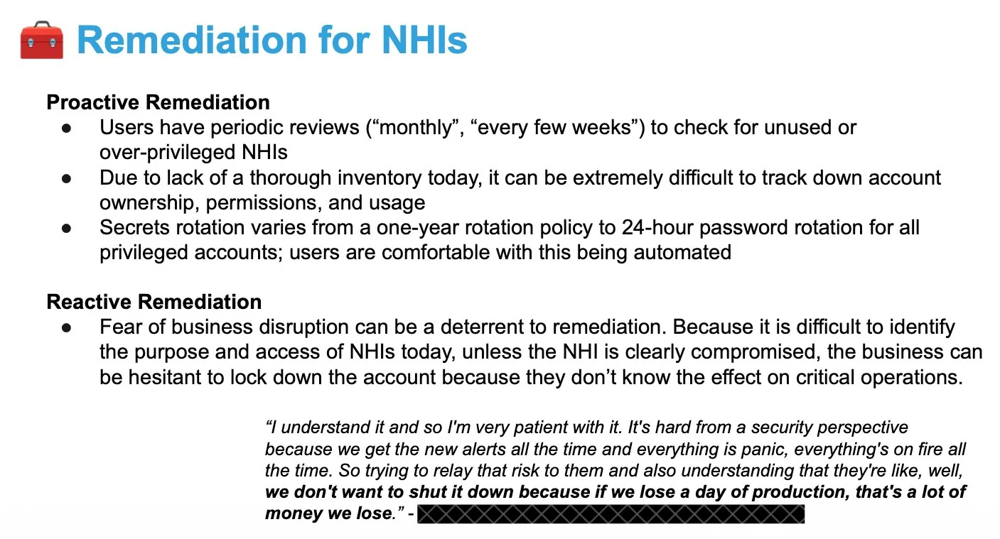
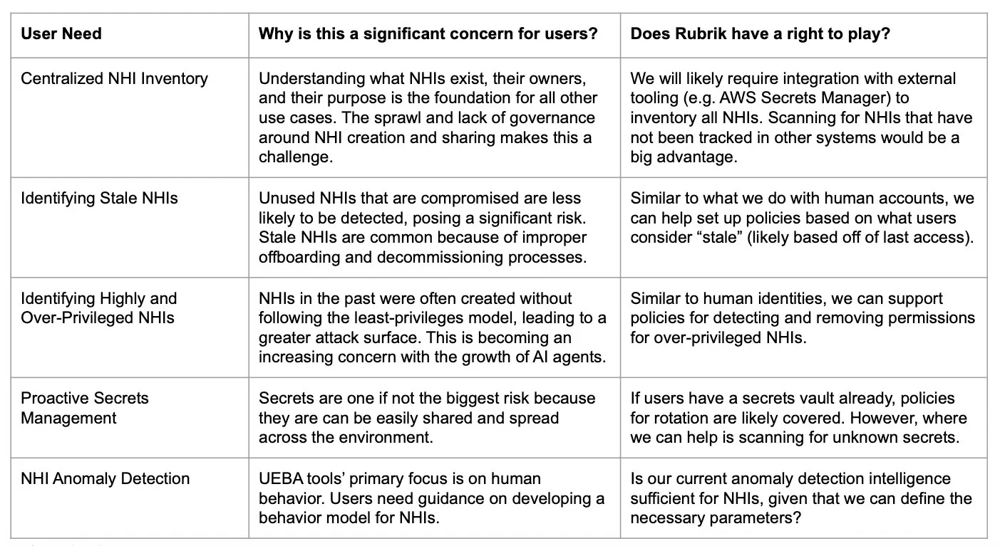

In 2025, Rubrik had launched its first identity-protection products for human identities — but anecdotes from earlier user interviews kept pointing at a second, less-examined risk: non-human identities (NHIs). The product manager needed evidence to justify investing here, so I launched a study to answer two questions: how big a problem are NHIs, really — and what could Rubrik actually do about it? As the sole researcher, I sat on the strategic team alongside product, helping shape both the direction and the strategy for how Rubrik approached NHI data protection.
Research Methodology
NHIs were an evolving space at the time, with no clean ownership boundary across roles — so I recruited based on responsibility, not title. In total, I ran 10 user interviews: two internal employees who own NHI risk at Rubrik (a Staff Security Identity Engineer and a Threat Hunting & Detection Engineer), and eight external users across IT/Cloud and Security/Compliance functions, at companies ranging from large enterprises to mid-sized businesses.
Answering the Core Questions
What do users actually consider an NHI?
This had to come first, before anything else could move forward. Users understand the term "non-human identity" — but rarely use it themselves, reaching instead for the umbrella term "service account." In practice, they define an NHI as two things together: an entity that lets applications talk to each other without a human in the loop (service principals, managed identities, agents, certificates), and the secrets tied to it (passwords, keys, tokens).
Users don't rank NHI types by what they are — they rank them by risk level. The more connections and privileges an NHI has into critical applications, the larger its attack surface, and the more urgently it needs attention.
How big a problem are NHIs, really?
Two forces are pushing NHIs to the top of the priority list:
- Cloud adoption — more API usage, and NHIs increasingly created in a decentralized way, beyond any single team's view
- AI adoption — more agents deployed across systems means more privileged NHIs, full stop
And three things are compounding how overwhelmed users feel about it:
- Lack of visibility — NHIs often get created without an approval process, or spin up automatically from a workflow, with API secrets shared around with no other team the wiser. The result is a sprawl of unknown, untracked entities that's simply not feasible for IAM or Security teams to get their arms around.
- No centralized inventory — especially painful for companies migrating legacy infrastructure to the cloud, trying to get one view of all their NHIs and what they own. Without knowing who owns an NHI and what it can touch, there's no way to act on it responsibly.
- Lifecycle management, with no end — tracking creation, rotating secrets, deciding when to decommission: all of it is manual today, and none of it ever really stops.
Using Frameworks to Communicate Insights
This was a large, abstract space — so I leaned on simple frameworks to make the findings land clearly with stakeholders and keep the conversation moving.
Hierarchy of NHI needs
Almost every issue people raised traced back to one root cause: no centralized inventory of their NHIs. Even the users who felt they had a decent handle on their NHIs still struggled to manage them — worried, for instance, about NHIs holding more permissions than they should. And given the sheer volume of NHIs (especially with AI driving more API key usage), everyone wanted intelligent tooling to catch issues early and automate the fix.

How Rubrik can help
Using that same pyramid, I mapped where Rubrik could realistically show up at each level. The discussion that followed surfaced a key strategic insight for the team: centralized inventory is table-stakes — necessary, but not where Rubrik wins. The real opportunity, for most customers at this stage of their NHI journey, was Lifecycle Management & Governance.

User Need Insights
For each need, I explained why it was a real frustration today, what it actually looks like inside a user's environment, and brought in their own words — partly to make the recommendation land, partly because the emotional undertone (overwhelmed, uncertain) was itself a finding.






"It's the people that set up the account [...] they had a way of doing it just because it worked at the time and they didn't realize what they were doing [...] it's just the age-old problem of human error — it's funny, it's about NHIs, but humans are our biggest risk." Security & Compliance interview participant
Top Emerging Themes & Opportunities
I closed the report with a summary of every user need uncovered, how significant a concern it was, and whether Rubrik genuinely had a right to play in that space — rather than just a reason to.
